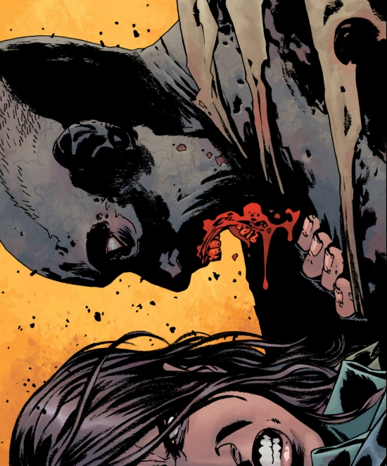

The Walking Dead is a franchise which doesn’t need an introduction. Firstly, thanks to a highly successful television horror series, secondly, courtesy of an episodic graphic adventure game from Telltale Games, with both receiving worldwide critical acclaim. But there won’t be either of the above adaptations, if there wasn’t for The Walking Dead which started it all, that is, the original The Walking Dead comic book series.
Now running for more than 13 years, making it one of the longest ongoing comic book series, The Walking Dead was conceived and created by writer Robert Kirkman and illustrated by artist Tony Moore. Although Moore was replaced by Charlie Adlard from the issue #7 onwards, he contributed to the title as a cover artist until the issue #24 and also illustrated the covers for the series’ first four collected volumes.
The story of The Walking Dead revolves around the adventures of Rick Grimes, a small town sheriff's deputy, whose life has been turned upside down by a world-wide zombie apocalypse. He, his young son Carl and a small group of survivors are fighting their way through the harsh post-apocalyptic Americas, where one wrong step can mean a difference between being alive or dead (or rather, ahem, walking dead). In addition to endless hordes of flesh-eating zombies, Rick and his group must also face hostility from other groups of survivors, leaving you often wondering which of these two threats is worse, as the scattered remnants of the struggling human race, concerned only with their own survival, will do almost anything (in fact, you can cross out that ‘almost’) in order to survive, now that the civilised society and all its structures have collapsed.
Violence and killings are rife and the graphic novel has amassed an impressive body count over its so-far 160-issue run - and it ain’t only marginal characters who get killed either. If you are watching the television adaptation, you have learned by now that no one is safe in The Walking Dead universe. This is even much more true for the comic. In fact, the Kirkman’s penchant for maiming or killing off the most popular characters in the most hideous ways possible, probably didn’t go down too well with the producers of The Walking Dead television series, and if you both read the comics and seen the TV show, you cannot help but feel that the TV adaptation is a bit watered down – the creators of the TV show clearly weren’t prepared to go all the way into the dark territory of the comic book original.
“It's more fun to kill the characters that I'll miss. That has more impact.” says franchise’s creator Robert Kirkman, but the likelihood is that the television series’ producers are frightened to death that they might alienate the audience by killing off some of the best-loved characters.
It’s more fun to kill the characters that I’ll miss. That has more impact. – says comic's author Robert Kirkman
Kirkman reckons that the story will eventually come to an end at some point, though he admits that he did not even start thinking about the actual end. He says that he has a rough roadmap that could take the storyline easily to the issue #300 or beyond, assuming the readers will be willing to stick with the Rick & Co. for so long. So far, they don't seem to be waning.
Admittedly, there were a few lulls in the storyline, as you would expect for any comic running to 160 issues, but just when you thought you already saw it all (after all, there is only so many ways a man can kill a zombie) Kirkman surprises with introducing an intriguing new character, shocks by breaking yet another unbreakable taboo, or amazes with adding another unexpected mind-blowing twist to the storyline.

If you are already a fan of the TV show, you will find in the comic a new depth and a plethora of surprising deviations from the television show’s storyline, and if not, the graphic novel is the best starting point for anyone wanting to enter the violent, twisted and unforgiving, but also utterly fascinating, world of The Walking Dead.